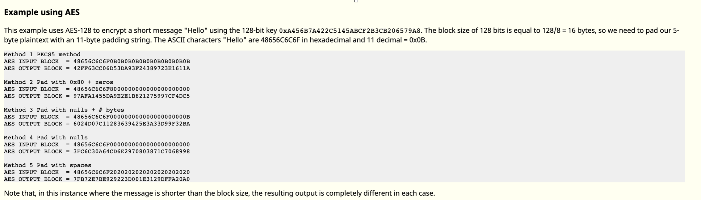

对称加密
当今我们所使用的加密算法，大致可以分为两类，即对称加密与非对称加密。其中非对称加密所能加密的内容长度一般受密钥长度的限制，且加密速度较慢，因此通常会与对称加密算法结合使用，即使用对称加密来对明文进行加密，再使用私钥对对称加密的密钥进行加密。
对称加密在消息通信的两端共享相同密钥，加密算法一般分为两种类型：
流加密（Stream Ciphers）：逐字节加密数据
块加密（Block Ciphers）：逐块加密数据
其中块加密的块大小与具体加密算法的实现有关，常见的块大小有128、256位等。
1.流加密
流密码一般逐字节或者逐比特处理信息。一般来说
流密码的密钥长度会与明文的长度相同。
流密码的密钥派生自一个较短的密钥，派生算法通常为一个伪随机数生成算法。
（1）伪随机数生成算法生成的序列的随机性越强，明文中的统计特征被覆盖的更好。
（2）流密码加解密非常简单，在已知明文的情况下，可以非常容易地获取密钥流。
（3）流密码的关键在于设计好的伪随机数生成器。一般来说，伪随机数生成器的基本构造模块为反馈移位寄存器。当然，也有一些特殊设计的流密码，比如 RC4。
详情请参考：
https://wiki.x10sec.org/crypto/streamcipher/intro/
2.块加密
概述
所谓块加密就是每次加密一块明文，常见的加密算法有
- IDEA 加密
- DES 加密
- AES 加密
其实，我们也可以把块加密理解一种特殊的替代密码，但是其每次替代的是一大块。而正是由于一大块，明文空间巨大，而且对于不同的密钥，我们无法做一个表进行对应相应的密文，因此必须得有复杂的加解密算法来加解密明密文。
在块加密中，原始数据会被分割成若干个大小为N的块，并分别对这些块进行加密。由于我们不能保证数据是N的倍数，因此需要对数据进行填充（Padding），这增加了实现的复杂度。一般来说，与流加密相反，块加密的解密流程和加密流程往往是不同的。
AES算法已经很安全了，所以大多数破解方法都是针对加密模式的弱点进行攻击。
2.1 分组加密模式
分组密码只能加密固定长度的分组，但是我们需要加密的明文长度可能会超过分组密码的分组长度，这时就需要对分组密码算法进行迭代，以便将一段很长的明文全部加密。这个迭代的方法就称为分组密码的模式（mode）。
在介绍模式前我们引入两个术语：
明文分组（M_n）：指分组密码算法中作为加密对象的明文，明文分组的长度与分组密码算法的分组长度是等长的。
密文分组（C_n）：指使用分组密码算法将明文分组加密之后所生成的密文。

2.1.1 Padding
在分组加密中，明文的长度往往并不满足要求，需要进行 padding，而如何 padding 目前也已经有了不少的规定。
常见的填充规则（AES-pkcs#7\DES-pkcs#5）如下。需要注意的是，即使消息的长度是块大小的整数倍，仍然需要填充。
一般来说，如果在解密之后发现 Padding 不正确，则往往会抛出异常。我们也因此可以知道 Paddig 是否正确。
当 使用CFB、OFB、CTR模式时，不需要padding，但是需要独一无二的IV。
以AES为例的填充规则：

2.1.2 电子密码本模式（ECB）
这是分组加密最简单的一种模式，即明文的每一个块加密成密文的每一个块。明文被分为若干块$(M_1,M_2,M_3,M_4, … ,M_n)$，通过加密方法$E_k$，得到密文$(C_1,C_2,C_3,C_4,…,C_n)$，当最后一个明文分组小于分组长度时，需要用一些特定的数据进行填充。
攻击：
明文分组后，每个分组被分别加密，所以明文相同的两个分组，被加密出来的密文分组也是一样的。
常见的一种利用方式，就是构造分组，获取想要的明文对应的密文。
2.1.3 密码分组链接模式（CBC）
这个模式的实现更复杂、更安全，因此它是使用最普遍的块加密模式。在这种模式下，来自上一块的密文与当前明文块做XOR逻辑运算，得到的结果才是加密的位块。
加密过程：

解密过程：

攻击：
（1）CBC字节反转攻击
通过损坏密文字节来改变明文字节。(注：借助CBC内部的模式)借由此可以绕过过滤器，或者改变用户权限提升至管理员
从解密过程可以看出，CBC的解密依赖前一个分组的密文作为IV与中间结果异或， 这个增加了复杂度，但是从另一个方面也可以看出，也可以通过修改前一个密文值来得到想要的明文。原理即是利用异或的特性，两个相同值异或，结果为0。
异或特性：0 ^ b = b ; a ^ a = 0 ; a ^ a ^ b = b;
假设当前CBC分组为第i个分组，则c为对应的分组密文，p为明文，Mv为中间值, 以修改第i个分组第j个字节为X为例。则过程如下：
$$
Mv[i] = c[i] decrypt\\p[i] = Mv[i]⊕ c[i-1]\\p[i][j] = Mv[i][j] ⊕ Mv[i-1][j] (第j个字节)\\0 = s[i][j] ⊕ c[i-1][j] ⊕ p[i][j]\\X = Mv[i][j] ⊕ c[i-1][j] ⊕ p[i][j] ⊕ X\
$$
所以，若修改前一个密文分组第j个字节：
$$
Xcipher[i-1][j] = c[i-1][j] ⊕ p[i][j] ⊕ X
$$
则由式【3】【5】可以得出
$$
p[i][j] = Mv[i][j] ⊕ Xcipher[i-1][j] = X
$$
即可以得到想要的值。
参考链接：
例题分析与应用：
http://drops.xmd5.com/static/drops/tips-7828.html
（2）Padding Oracle Attack
Padding Oracle Attack 攻击一般需要满足以下几个条件
加密算法
- 采用 PKCS5 Padding 的加密算法。 当然，非对称加密中 OAEP 的填充方式也有可能会受到影响。
- 分组模式为 CBC 模式。
攻击者能力
- 攻击者可以拦截上述加密算法加密的消息。
- 攻击者可以和 padding oracle（即服务器） 进行交互：客户端向服务器端发送密文，服务器端会以某种返回信息告知客户端 padding 是否正常。
Padding Oracle Attack 攻击可以达到的效果如下
- 在不清楚 key 和 IV 的前提下解密任意给定的密文。
原理：
Padding Oracle Attack 攻击的基本原理如下：
- 对于很长的消息一块一块解密。
- 对于每一块消息，先解密消息的最后一个字节，然后解密倒数第二个字节，依次类推。
这里我们回顾一下 CBC 的加解密：
- 加密：
$$
C_i=E_K(P_i ⊕ C_{i-1})\\ C_0=IV
$$
- 解密：
$$
P_i=D_K(C_i ⊕ C_i-1\\ C_0=IV
$$
详细介绍：
其他分组加密模式
2.1.4 密文反馈模式（CFB）
2.1.5 输出反馈模式（OFB）
2.1.6 计数器模式（CTR）
以上三种加密模式安全性高且算法复杂，安全弱点较少，所以就先不在此讨论
非对称加密—RSA
RSA原理
RSA应该是最早的公钥加密系统之一了，其名称是三个发明者的名字首字母缩写（Rivest–Shamir–Adleman）。其算法所基于的难题假设是质数分解问题，在此之前先简单介绍一下涉及到的数学基础。
1、欧拉函数：φ(n)，表示小于n的正整数中与n互质的数的数目。如果n能写做两个不同质数p和q的乘积，那么则有φ(n) = （p - 1）\（q - 1）。
2、同余：给定一个正整m，如果两个整数a和b满足(a-b)被m整除，那么就称为a和b对模m同余，记作a≡b(mod\ m)，其中≡是同余符号。同余的两个数有一些有趣的特性，比如反身性、对称性、传递性等等，详见《数论》。
3、模逆元：也叫模倒数(modular\ multiplicative\ inverse)。整数a的模逆元为整数x，则满足ax≡1 (mod\ m)，其中m为模(modulus)。
4、欧拉公式：若a与n互为质数，则满足a^φ(n)≡1 （mod n），证明：参考拉格朗日定理。
5、lcm：least common multiple，最小公倍数。
6、gcd：greatest common devisor，最大公约数。
7、互质：co-prime，两个正整数a、b互质意味着能同时被它们整除的数只有1，即gcd（a,b）= 1*
秘钥构成
有了上面的数学基础，再来看RSA公私钥的组成和生成过程。秘钥生成主要有以下几步，其实每一步在实践上都有注意事项，这个后面单独说。
找到两个不同的质数p和q，计算其乘积
$$
N=pq
$$根据欧拉函数，求得
r = φ（N）= φ（p） * φ（q） = （p-1\） * \（q-1\）
选择一个整数e，满足1 < e < r且gcd(e, r) = 1，即e和r互质
计算一个e的模逆元 d，对应模为r，
$$
ed≡1(mod\ r)
$$
计算过程涉及拓展欧几里得算法和贝祖恒等式，d就是其中一个贝祖系数(coefficient)
在上面的数字中挑选出构造非对称加密的元素：
- 公钥：(n, e)
- 私钥：(n, d)
e和d分别是公钥和私钥的核心，这两个数互为模逆元。
（1）要想通过公钥e推算出私钥d，就需要知道φ(n)；
（2）而计算φ(n)=(p-1)(q-1)则需要知道p和q；公私钥都已知n=pq；
（3）这就是难题假设的关键：当n很大的时候很难计算出对应的p和q。
加密与解密
假设我们有公钥(n, e)，需要加密的内容为m，m是个小于n的正整数。则密文c为：
$$
m^e ≡ c\ (mod\ n)\
c = m^e\ mod\ n
$$
使用模指数运算，即便数字很大也可以很快算出。
对方拥有私钥(n, d)，对密文c解密可获得明文m，方法如下：
$$
c^d≡(m^e)^d≡m\ (mod\ n)\
m=c^d\ mod\ n
$$
对RSA的攻击
共模攻击
在实现RSA时，为方便起见，可能给每一用户相同的模数n，虽然加解密密钥不同，然而这样做是不行的。
设两个用户的公开钥分别为e1和e2，且e1和e2互素（一般情况都成立），明文消息是m，密文分别是：
$$
c_1\ ≡\ m^e1\ (mod\ n)\\c_2\ ≡\ m^e2\ (mod\ n)
$$
例题：XMan 一期夏令营课堂练习
小公钥指数攻击
假定将RSA算法同时用于多个用户（为讨论方便，以下假定3个），然而每个用户的加密指数（即公开钥）都很小。
设3个用户的模数分别为ni (i=1,2,3)，当i≠j时，gcd(ni,nj)=1，否则通过gcd(ni,nj)有可能得出ni和nj的分解。设明文消息是m，密文分别是
$$
c_1\ ≡\ m^3\ (mod\ n1)\\c_2\ ≡\ m^3\ (mod\ n2)\\c_3\ ≡\ m^3\ (mod\ n3)
$$
d 泄露攻击
首先当 d 泄露之后，我们自然可以解密所有加密的消息。我们甚至还可以对模数 N 进行分解。
利用以下工具可以直接进行计算
- RsaConverter.exe (https://sourceforge.net/projects/rsaconverter/ , for windows )
- rsatool.py
暴力分解 N
攻击条件¶：
在 N 的比特位数小于 512 的时候，可以采用大整数分解的策略获取 p 和 q。
模不互素
攻击原理¶
当存在两个公钥的 N 不互素时，我们显然可以直接对这两个数求最大公因数，然后直接获得 p，q，进而获得相应的私钥。